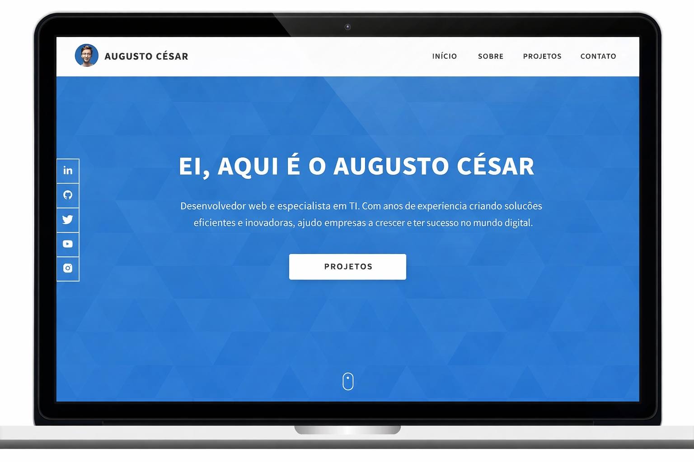

Me chamo Augusto Cesar e estou aprendendo a programar e quero ser um desenvolvedor de software.
Venha me conhecer!PROJETOS
Aqui estão alguns dos meus projetos mais recentes. Sinta-se à vontade para explorá-los e entrar em contato se tiver alguma dúvida ou quiser colaborar!

Dopefolio
Dopefolio é um portfólio online que exibe meus projetos de desenvolvimento web, habilidades e experiência. Ele serve como uma plataforma para mostrar meu trabalho e me conectar com potenciais empregadores ou clientes.
Estudo de Caso
Wilsonport
A Wilsonport é uma empresa de logística e transporte com múltiplos serviços, e eu criei o site deles do zero, usando as ferramentas de front-end que conheço.
Estudo de Caso
Clone de Café Boreal
Recriei a interface do usuário do aplicativo oficial da Boreal Coffee porque me encantei com a beleza do design. Foi uma ótima experiência construir toda a interface.
Estudo de Caso
Modelo de Coroa
Crown é um modelo de site que criei voltado para o setor de restaurantes e alimentação, e que qualquer pessoa pode usar para apresentar seu negócio online.
Estudo de caso